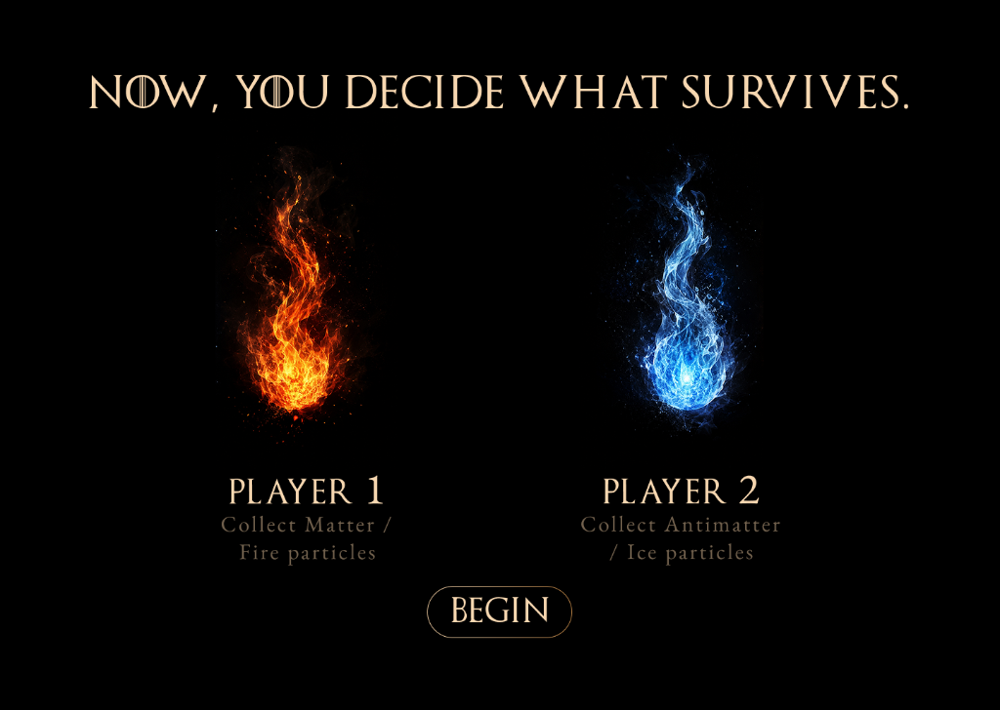

In Game of Thrones, the world is shaped by the opposing forces of Fire and Ice.
Our game reimagines this battle through Matter and Antimatter.
AT THE BEGINNING OF THE UNIVERSE, MATTER AND ANTIMATTER WERE CREATED IN ALMOST EQUAL AMOUNTS. WHEN THEY MEET, THEY ANNIHILATE EACH OTHER. BUT A TINY EXCESS OF MATTER SURVIVED — ALLOWING STARS, PLANETS, AND LIFE TO EXIST.
NOW, YOU DECIDE WHAT SURVIVES.

PLAYER 1
Collect Matter / Fire particles
PLAYER 2
Collect Antimatter / Ice particles
SCAN TO PLAY
Two players have 30 seconds to collect particles around the installation.